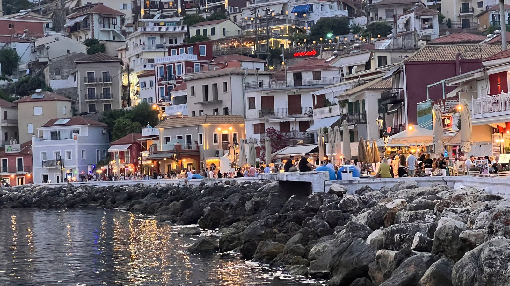
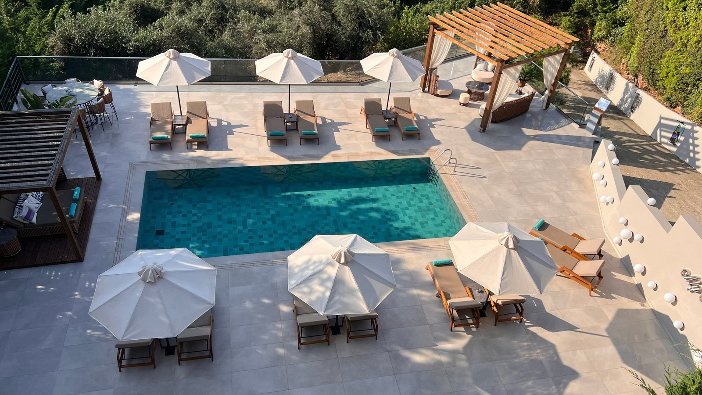
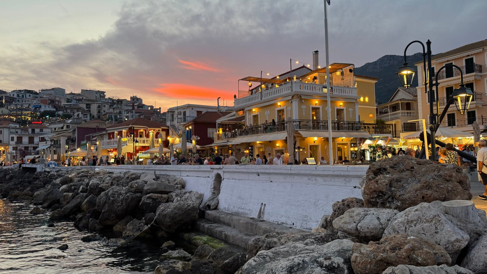
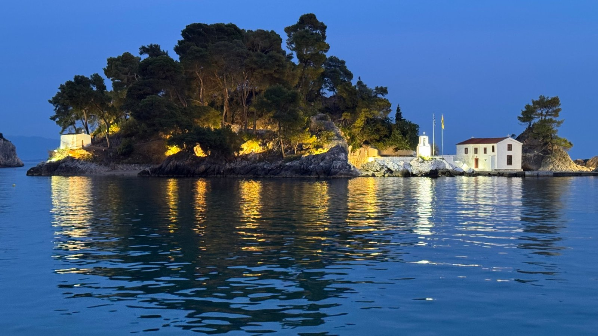

FIRST IMPRESSIONS OF PARGA
There are some places in Greece that seem to have been designed specifically to make you fall in love with them. Parga is one of those places. Arriving in this pretty little town on the Ionian coast, you are greeted by a sweeping bay, colourful houses tumbling down the hillside and water so turquoise it looks as though someone has been a little overenthusiastic with the paintbrush.
It's all rather lovely. In fact, annoyingly lovely. The sort of place where you arrive intending to have a quick look around and suddenly realise you've spent three hours wandering the streets, stopping for drinks and wondering whether you could possibly justify staying another week.
WHAT IS PARGA LIKE?
Built around a beautiful horseshoe-shaped bay, Parga is one of the most picturesque towns on mainland Greece. Its colourful Italianate buildings climb amphitheatrically up the surrounding hillsides, while narrow cobbled streets weave between traditional houses, little boutiques and restaurants.
The town has a distinctly Mediterranean feel, with a hint of Venetian influence in its architecture. Lush green hills provide a backdrop, while the small island of Panagia, complete with its whitewashed chapel, sits just offshore, adding to the postcard-perfect scenery.

The waterfront is the focal point, lined with tavernas, cafés and bars overlooking the harbour. Fishing boats bob gently in the water, and the Venetian Castle watches over everything from its rocky headland.
Parga manages to combine the charm of a traditional Greek seaside town with enough restaurants, shops and places to explore to keep you occupied. It's lively without feeling like a purpose-built holiday resort, although during the height of summer it certainly knows how to attract a crowd.
OUR STAY IN PARGA – MY SUITE BOUTIQUE HOTEL
We stayed at My Suite Boutique Hotel, a three-star boutique property just outside the centre of Parga.
And what a find.
One of the biggest advantages was the small parking area opposite the hotel. Now, this might not sound particularly exciting, but anyone who has driven around Parga during peak season will understand why I mention it.
Parking in Parga is not for the faint-hearted. Much of it is roadside parking, spaces can be difficult to find and, at busy times of the day, it can become something of an Olympic sport. Having somewhere to leave the car without embarking on a lengthy search was a definite bonus.
The hotel itself is beautifully presented, with warm earthy tones, stylish furnishings and a relaxed boutique feel. Our apartment was spacious and well equipped, with a kitchenette, mini-fridge, kettle and balcony. It certainly didn't disappoint, although we were slightly puzzled by the double bunk beds in the room. We eventually decided they were an excellent place to store our luggage.
Every hotel room should come with a dedicated suitcase department.
But the real star of the show was the view.
Breakfast on the hotel veranda was an absolute pleasure. The panoramic views across the Ionian Sea were breathtaking, and the buffet included traditional Greek breakfast dishes and homemade pies. It's difficult to think of a better way to start the day than sitting with a coffee, enjoying a Greek breakfast and looking out over that spectacular coastline.

The swimming pool area was equally impressive, with lovely sun loungers and views that could keep you entertained for hours. It's the sort of place where you tell yourself you'll spend half an hour relaxing before heading out, only to find that lunchtime has somehow arrived.
The hotel is also conveniently positioned, around 2km from Valtos Beach and approximately 800 metres from the historic Ali Pasha Castle at Anthoussa.
BEST THINGS TO SEE AND DO IN PARGA
Explore the old town and Venetian Castle
The best way to experience Parga is simply to get out and explore on foot. Wander through the narrow streets, browse the little boutiques and gift shops, and discover the traditional tavernas tucked away around the town.
Make your way uphill to the Venetian Castle, which dates back to the town's Venetian past. Perched on a rocky headland above the harbour, it offers wonderful panoramic views across the bay, the colourful rooftops and the Ionian Sea. It's particularly beautiful towards sunset.

Visit Panagia Island

Just offshore is the tiny green island of Panagia, with its charming whitewashed chapel. It makes a lovely focal point for photographs and adds to Parga's distinctive appearance. You can swim or take a short boat trip across to explore the little island.
Discover the beaches
Parga is particularly well placed for beach lovers, with several beautiful stretches of coastline nearby.
- Valtos Beach: A large sandy beach just around the headland from the town, with clear turquoise water and plenty of facilities.
- Krioneri Beach: The main town beach, conveniently located close to the restaurants and shops.
- Lichnos Beach: A beautiful bay surrounded by green hills, with crystal-clear water.
- Sarakiniko Beach: A little further away, but well worth considering for its attractive setting and relaxed atmosphere.
If you have a car, there are plenty more beaches to discover, including Agios Sostis, Arillas and Karavostasi. You can also venture further north along the coast to the pretty little harbour town of Syvota.
Visit Ali Pasha Castle
For a little history, head inland to the Ottoman-era Ali Pasha Castle at Anthoussa. Sitting above the surrounding countryside, it offers another excellent viewpoint and an opportunity to explore a different chapter of the area's history.
PRACTICAL TIPS FOR VISITING PARGA
- Getting there: The nearest airport is Aktion National Airport (Preveza), approximately 65km away. Ioannina Airport is another option, around 103km away. Alternatively, you can fly to Corfu and take the ferry across to Igoumenitsa, followed by a drive to Parga.
- Getting around: A hire car is useful if you want to explore the surrounding beaches and villages, but be prepared for parking challenges in the town itself. If your accommodation offers parking, take advantage of it. Read our car hire tips before you book.
- When to visit: May to September is the main season. June and September are particularly appealing if you prefer warm weather without the busiest summer crowds. July and August are hot, with temperatures often reaching around 30°C or higher.
- How long to stay: Allow at least three or four nights to enjoy Parga itself and explore the surrounding coastline. A week would give you plenty of time to discover the beaches and nearby coastal towns without rushing around.
OUR VERDICT – IS PARGA WORTH VISITING?
Absolutely. Parga is one of those destinations that gets almost everything right. Beautiful scenery, colourful architecture, lovely beaches, excellent restaurants and enough character to make you want to keep exploring.
It's certainly not the quietest corner of Greece, particularly during the summer months, but there's a reason people return year after year.
We loved the combination of pretty streets, waterfront dining and easy access to some gorgeous beaches. And staying at My Suite Boutique Hotel, with its wonderful views and breakfast terrace, made the experience even better.
If you're looking for a mainland Greek destination with a little bit of everything, Parga deserves a place on your list. Just remember to sort out your parking before you arrive.
Trust us on that one.